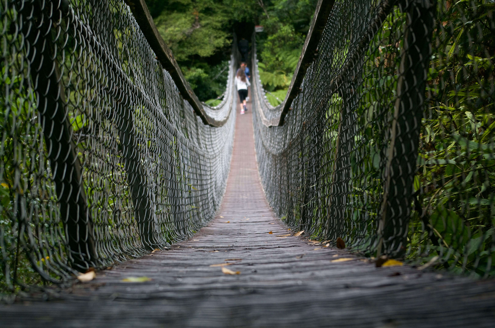
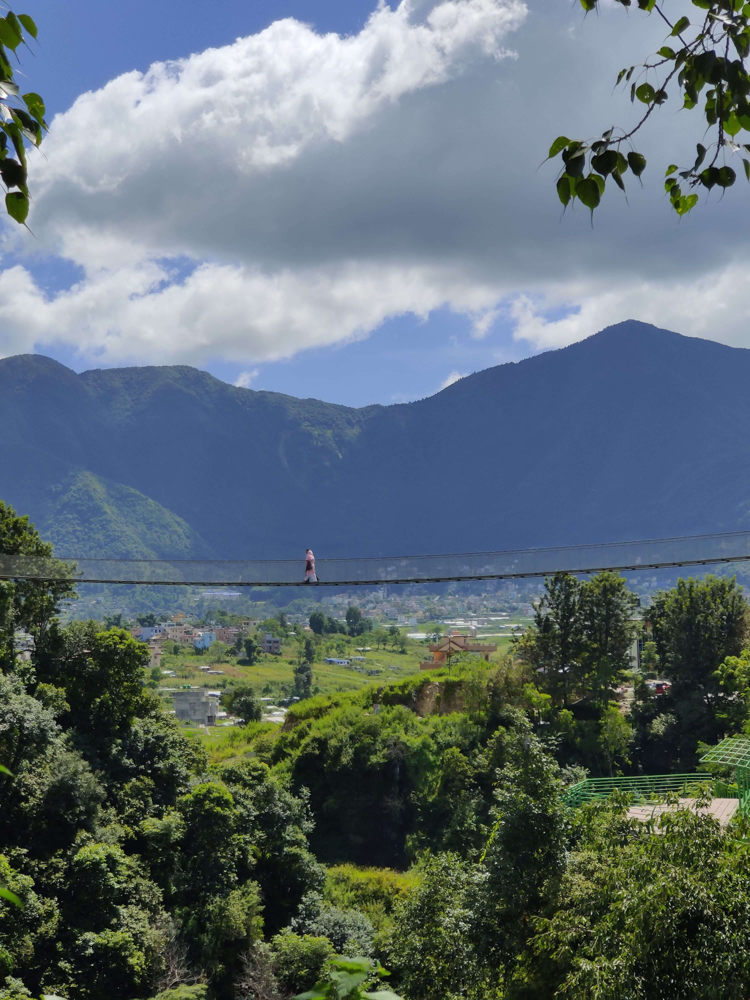

Mistico Hanging Bridges: A Walk Above the Canopy
By Local Expert | Updated July 2026

Located near the Arenal Lake, Mistico Hanging Bridges Park offers one of the most immersive rainforest experiences in Costa Rica. With 16 bridges in total—6 of them suspended high above the trees—it’s the perfect place to see wildlife and enjoy stunning volcano views.
Plan Your Visit
- 💰 Entrance Fee: Around $32 USD for adults (Guided tours are extra).
- ⏰ Best Time: 6:00 AM to 9:00 AM (Best for wildlife spotting).
- 🚶 Trail Length: 3.2 km (2 miles) - Accessible options available.
- 🦅 Wildlife: Sloths, monkeys, toucans, and snakes.
The Experience: 16 Bridges to Cross
The main trail is a circular loop that takes you through various levels of the rainforest. The hanging bridges are the highlight, stretching up to 97 meters (318 feet) long. From these heights, you are at eye level with the birds and the monkeys that inhabit the canopy.

AdSense In-